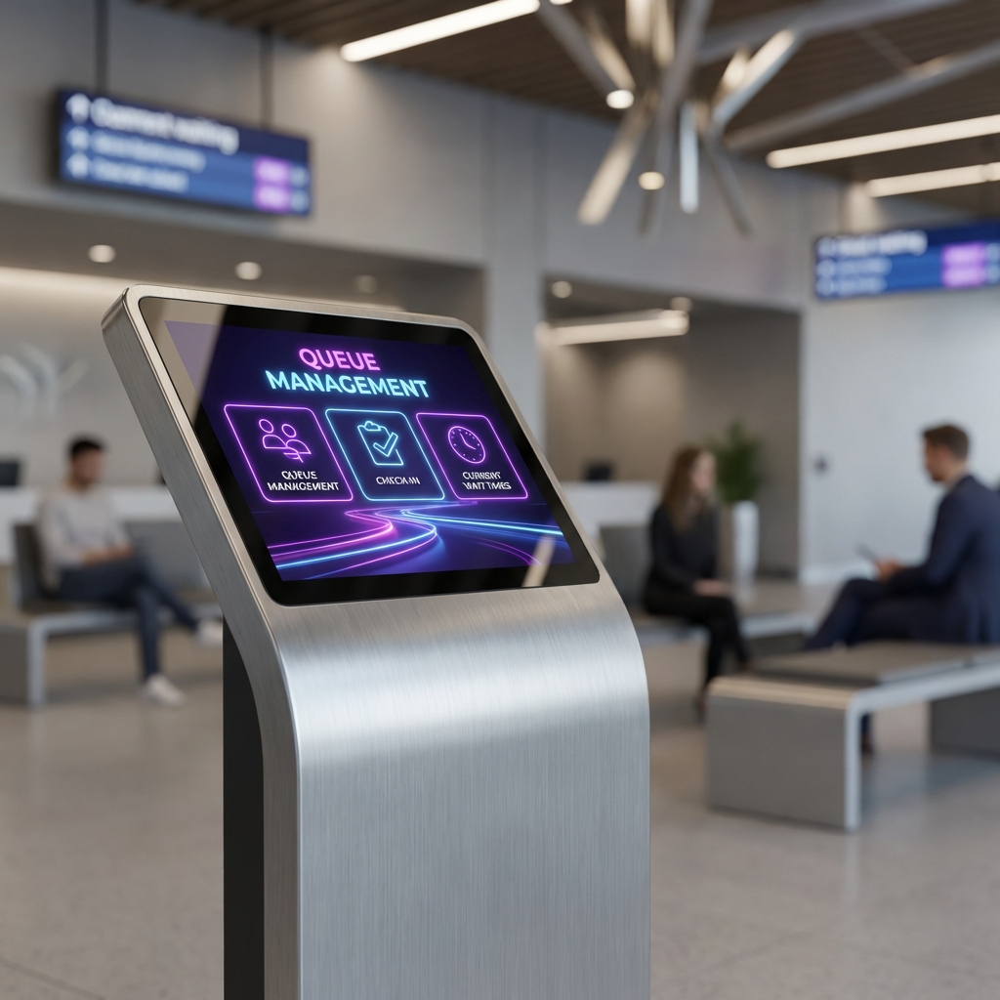

Featured Projects

Backend · Full Stack
QR Based Queue-Management System
October 2025
Designed and developed a QR-based queue management system to streamline and digitize customer flow. Implemented QR generation & scanning so users can join queues remotely, cutting physical wait times. Built real-time token tracking with PostgreSQL and a React frontend.

Backend · REST API
Attendance Management System
Dec 2025 – Jan 2026
Database-driven system streamlining student tracking and reporting. Spring Boot REST API handles registration, attendance recording and report generation against a MySQL backend.

Algorithms · Networking
Trust-Based Routing Algorithm
Dec 2025 – Jan 2026
Designed and implemented a trust-based routing algorithm for secure data transmission. Uses TCP/IP concepts to identify and avoid unreliable nodes, evaluated across path cost, reliability, and efficiency metrics.

Data Visualization
IPL Power BI Dashboard
2025
Interactive dashboard providing deep insights into IPL matches. Visualizes team performance, player statistics and match trends using advanced Power BI features and custom DAX measures.
Image Processing · Deep Learning
Lumbar Spine Disease Diagnosis
2025
Automated detection system for lumbar spine herniations and bulges using YOLOv8, achieving 78% accuracy. Pre-processed DICOM images with manual labelling for clinical decision support.